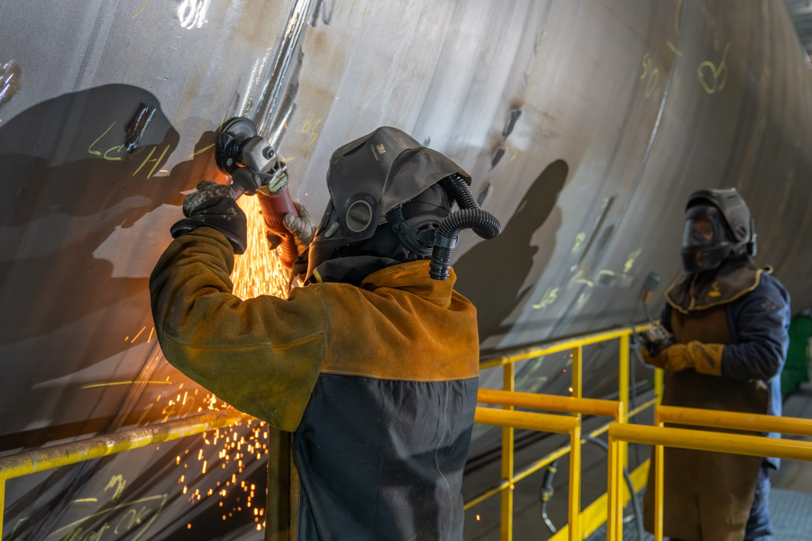
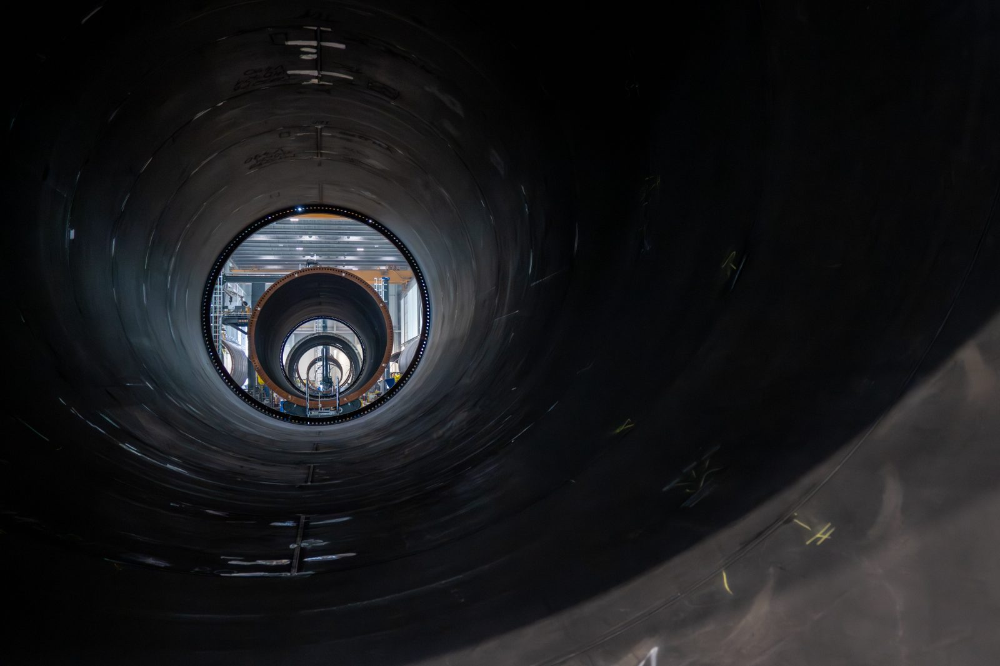
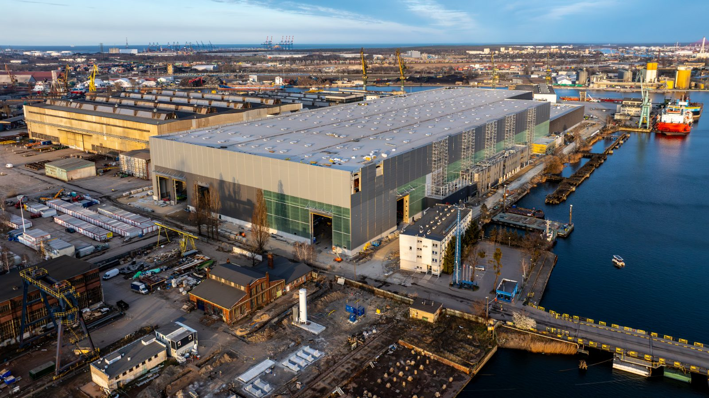
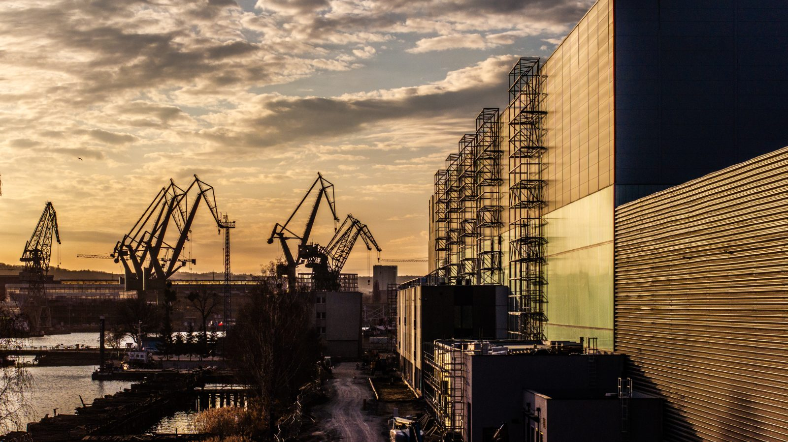

Baltic
Towers.
A recruitment campaign for Baltic Towers, a wind tower manufacturer in Gdańsk. A social media film and production-floor photography that show the work as it really is.
Work worth
seeing.
Baltic Towers is building one of the largest wind tower factories in Poland and needs people on the floor: welders, operators, fitters. A job ad with a list of requirements is not enough to win them over.
We went for the real picture: the hall, the machines, the scale of the parts and the people who already work there. A short vertical film for social media and a photo series the company uses in job ads and on its careers page.
From the factory floor
to the feed.
Concept
Short, vertical and dynamic – made for Instagram, Facebook and TikTok, where people look for jobs today.
Shooting on site
Filming and photography without stopping production, following the plant’s safety rules.
Edit
Social-first pacing, captions and a clear message: join the team.
Photos for ads
Pictures of people and process for job ads, paid campaigns and the careers page.
Short, vertical,
to the point.
A film that shows the scale of the factory and the nature of the job in a few seconds. Ready to publish and promote in recruitment campaigns.

People and the scale
of production.


„Recruitment starts with a picture. We showed the factory so that people want to work there.”